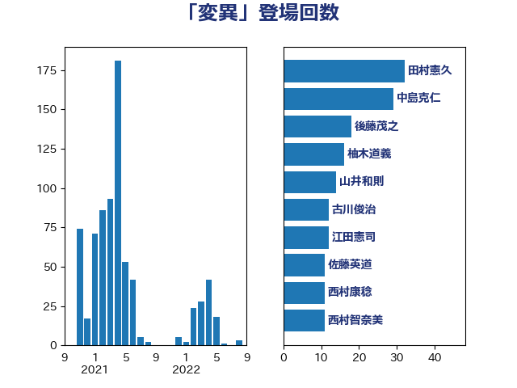

単語「変異」

| 田村憲久 | 自由民主党 | 32 回 |
| 中島克仁 | 立憲民主党 | 29 回 |
| 後藤茂之 | 自由民主党 | 18 回 |
| 柚木道義 | 立憲民主党 | 16 回 |
| 山井和則 | 立憲民主党 | 14 回 |
| 古川俊治 | 自由民主党 | 12 回 |
| 江田憲司 | 立憲民主党 | 12 回 |
| 佐藤英道 | 公明党 | 11 回 |
| 西村康稔 | 自由民主党 | 11 回 |
| 西村智奈美 | 立憲民主党 | 11 回 |
| 辻元清美 | 立憲民主党 | 11 回 |
| 岸田文雄 | 自由民主党 | 9 回 |
| 熊谷裕人 | 立憲民主党 | 8 回 |
| 井林辰憲 | 自由民主党 | 6 回 |
| 前原誠司 | 国民民主党 | 6 回 |
| 山本博司 | 公明党 | 6 回 |
| 武見敬三 | 自由民主党 | 6 回 |
| 緑川貴士 | 立憲民主党 | 6 回 |
| 大島敦 | 立憲民主党 | 5 回 |
| 大西健介 | 立憲民主党 | 5 回 |
| 枝野幸男 | 立憲民主党 | 5 回 |
| 梅村聡 | 日本維新の会 | 5 回 |
| 舟山康江 | 国民民主党 | 5 回 |
| 菅義偉 | 自由民主党 | 5 回 |
| 中谷一馬 | 立憲民主党 | 4 回 |
| 吉田統彦 | 立憲民主党 | 4 回 |
| 柳ヶ瀬裕文 | 日本維新の会 | 4 回 |
| 榛葉賀津也 | 国民民主党 | 4 回 |
| 河野太郎 | 自由民主党 | 4 回 |
| 田村まみ | 国民民主党 | 4 回 |
| 田村智子 | 日本共産党 | 4 回 |
| 逢坂誠二 | 立憲民主党 | 4 回 |
| 三宅伸吾 | 自由民主党 | 3 回 |
| 坂井学 | 自由民主党 | 3 回 |
| 小川淳也 | 立憲民主党 | 3 回 |
| 東徹 | 日本維新の会 | 3 回 |
| 清水貴之 | 日本維新の会 | 3 回 |
| 玄葉光一郎 | 立憲民主党 | 3 回 |
| 蓮舫 | 立憲民主党 | 3 回 |
| 足立康史 | 日本維新の会 | 3 回 |
| 一谷勇一郎 | 日本維新の会 | 2 回 |
| 上川陽子 | 自由民主党 | 2 回 |
| 井上英孝 | 日本維新の会 | 2 回 |
| 伊藤孝恵 | 国民民主党 | 2 回 |
| 佐藤茂樹 | 公明党 | 2 回 |
| 加藤勝信 | 自由民主党 | 2 回 |
| 吉田とも代 | 日本維新の会 | 2 回 |
| 塩田博昭 | 公明党 | 2 回 |
| 大塚耕平 | 国民民主党 | 2 回 |
| 小熊慎司 | 立憲民主党 | 2 回 |
| 川田龍平 | 立憲民主党 | 2 回 |
| 市村浩一郎 | 日本維新の会 | 2 回 |
| 打越さく良 | 立憲民主党 | 2 回 |
| 木村次郎 | 自由民主党 | 2 回 |
| 本田顕子 | 自由民主党 | 2 回 |
| 横沢高徳 | 立憲民主党 | 2 回 |
| 泉田裕彦 | 自由民主党 | 2 回 |
| 渡辺周 | 立憲民主党 | 2 回 |
| 石井苗子 | 日本維新の会 | 2 回 |
| 石垣のりこ | 立憲民主党 | 2 回 |
| 石橋通宏 | 立憲民主党 | 2 回 |
| 赤羽一嘉 | 公明党 | 2 回 |
| 道下大樹 | 立憲民主党 | 2 回 |
| 金村龍那 | 日本維新の会 | 2 回 |
| こやり隆史 | 自由民主党 | 1 回 |
| 上田清司 | 国民民主党 | 1 回 |
| 中川貴元 | 自由民主党 | 1 回 |
| 中谷真一 | 自由民主党 | 1 回 |
| 二階俊博 | 自由民主党 | 1 回 |
| 井上哲士 | 日本共産党 | 1 回 |
| 仁木博文 | 無所属 | 1 回 |
| 今枝宗一郎 | 自由民主党 | 1 回 |
| 伊東信久 | 日本維新の会 | 1 回 |
| 佐々木紀 | 自由民主党 | 1 回 |
| 倉林明子 | 日本共産党 | 1 回 |
| 加田裕之 | 自由民主党 | 1 回 |
| 原口一博 | 立憲民主党 | 1 回 |
| 吉川元 | 立憲民主党 | 1 回 |
| 吉田久美子 | 公明党 | 1 回 |
| 吉良州司 | 無所属 | 1 回 |
| 国光あやの | 自由民主党 | 1 回 |
| 塩川鉄也 | 日本共産党 | 1 回 |
| 小池晃 | 日本共産党 | 1 回 |
| 小沢雅仁 | 立憲民主党 | 1 回 |
| 山下芳生 | 日本共産党 | 1 回 |
| 山口那津男 | 公明党 | 1 回 |
| 山岡達丸 | 立憲民主党 | 1 回 |
| 山崎正恭 | 公明党 | 1 回 |
| 岡田克也 | 立憲民主党 | 1 回 |
| 島村大 | 自由民主党 | 1 回 |
| 平井卓也 | 自由民主党 | 1 回 |
| 平木大作 | 公明党 | 1 回 |
| 後藤祐一 | 立憲民主党 | 1 回 |
| 徳永エリ | 立憲民主党 | 1 回 |
| 本田太郎 | 自由民主党 | 1 回 |
| 松山政司 | 自由民主党 | 1 回 |
| 柴田巧 | 日本維新の会 | 1 回 |
| 池下卓 | 日本維新の会 | 1 回 |
| 浜口誠 | 国民民主党 | 1 回 |
| 浦野靖人 | 日本維新の会 | 1 回 |
| 清水真人 | 自由民主党 | 1 回 |
| 牧原秀樹 | 自由民主党 | 1 回 |
| 玉木雄一郎 | 国民民主党 | 1 回 |
| 田島麻衣子 | 立憲民主党 | 1 回 |
| 田村貴昭 | 日本共産党 | 1 回 |
| 田畑裕明 | 自由民主党 | 1 回 |
| 盛山正仁 | 自由民主党 | 1 回 |
| 矢倉克夫 | 公明党 | 1 回 |
| 福山哲郎 | 立憲民主党 | 1 回 |
| 福岡資麿 | 自由民主党 | 1 回 |
| 秋野公造 | 公明党 | 1 回 |
| 篠原孝 | 立憲民主党 | 1 回 |
| 美延映夫 | 日本維新の会 | 1 回 |
| 自見はなこ | 自由民主党 | 1 回 |
| 若松謙維 | 公明党 | 1 回 |
| 茂木敏充 | 自由民主党 | 1 回 |
| 萩生田光一 | 自由民主党 | 1 回 |
| 藤丸敏 | 自由民主党 | 1 回 |
| 西岡秀子 | 国民民主党 | 1 回 |
| 西田実仁 | 公明党 | 1 回 |
| 酒井庸行 | 自由民主党 | 1 回 |
| 野田国義 | 立憲民主党 | 1 回 |
| 長妻昭 | 立憲民主党 | 1 回 |
| 青木一彦 | 自由民主党 | 1 回 |
| 青木愛 | 立憲民主党 | 1 回 |
| 高木かおり | 日本維新の会 | 1 回 |
| 高橋光男 | 公明党 | 1 回 |
| 高橋千鶴子 | 日本共産党 | 1 回 |
| 麻生太郎 | 自由民主党 | 1 回 |